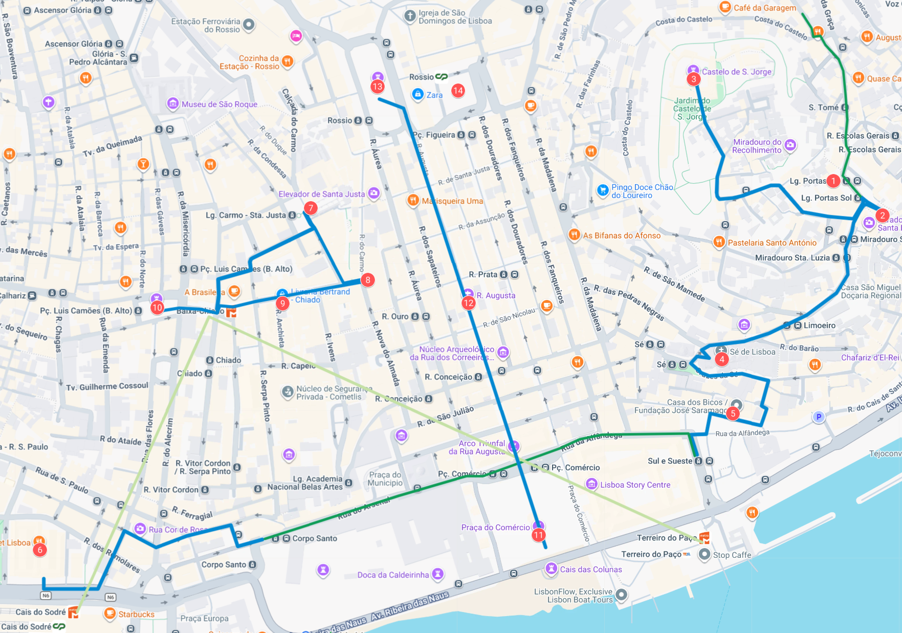

🇵🇹
Lisboa 2026 · City Break
DAN 2
Torek · 17. november 2026
Tramvaj, Alfama, grad in srce mesta
● LIVE · LISBOA
osvežujem ...
🌤️
-- °C
Pridobivam trenutno vreme ...
Občutek -- °C☔ -- %💨 -- km/h
Preverjam, kaj nam danes pripravlja Lizbona ...
Današnja pot

Alfama, Baixa in Chiado
Točke dnevaOd Alfame do večernega središča mesta
01
Casa dos Bicos
Hiša s kamnito fasado v obliki diamantov.
🏛️ arhitekturna posebnost
02
Igreja de Santo António
Cerkev na mestu, povezanem z rojstvom svetega Antona.
⛪ lizbonski zavetnik
03
Sé de Lisboa
Najstarejša lizbonska katedrala in simbol preživetja mesta.
⛪ mestna katedrala
04
Miradouro de Santa Luzia
Razgledna terasa z azuleji, pergolo in pogledom na Alfamo.
🌅 razgledna točka
05
Portas do Sol in Manteigaria
Razgled nad rdečimi strehami ter prvi pastel de nata.
🥧 portugalski okus
06
Castelo de São Jorge
Grajsko obzidje, stolpi in širok pogled nad mestom.
🏰 glavna znamenitost
07
Panteão Nacional
Prepoznavna bela kupola nad vzhodnim delom Alfame.
🏛️ pogled od daleč
08
Mercado da Ribeira in Time Out Market
Živahna mestna tržnica in skupno kosilo.
🍽️ kulinarični postanek
09
Cais do Sodré
Prometno in obrežno vozlišče ob reki Tejo.
🚉 mestni utrip
10
Convento do Carmo
Odprta kamnita ladja in ruševine velikega potresa.
⛪ gotske ruševine
11
Armazéns do Chiado
Nekdanja veleblagovnica in stičišče Baixe ter Chiada.
🏙️ mestna prelomnica
12
Baixa-Chiado
Osrednja povezava med spodnjim mestom in kulturnim Chiadom.
🚇 mestno vozlišče
13
Rua Garrett
Elegantna ulica knjigarn, kavarn in mestne kulture.
👣 mestni sprehod
14
Livraria Bertrand
Najstarejša še delujoča knjigarna na svetu.
📚 literarna postaja
15
Café A Brasileira
Zgodovinska kavarna lizbonskih umetnikov in intelektualcev.
☕ kulturna ikona
16
Praça Luís de Camões
Živahen trg med Chiadom in Bairro Altom.
🗿 mestni trg
17
Pink Street
Nekdanja pristaniška ulica v prepoznavni rožnati preobleki.
📸 barvita ulica
18
Praça do Comércio
Veliki rečni trg in nekdanji vhod v mesto.
🌊 glavni trg ob Teju
19
Arco da Rua Augusta
Slavolok, ki odpira osrednjo mestno ulico.
🏛️ mestni simbol
20
Martinho da Arcada
Zgodovinska kavarna pod arkadami trga.
☕ literarna sled
21
Rossio
Osrednji trg z valovitim tlakom in živahnim mestnim ritmom.
🏙️ srce Baixe
22
Teatro Nacional D. Maria II
Monumentalno narodno gledališče na severnem robu Rossia.
🎭 kulturna stavba
23
Praça da Figueira
Večerni trg ob Rossiu in zaključek mestnega kroga.
🌙 večerni zaključek
Iz programa potovanja
Tramvaj, Alfama, grad in srce mesta
Po zajtrku kratek pogled proti Parque Eduardo VII, nato z javnim prevozom in znamenitim tramvajem 28E proti Alfami. Pri Portas do Sol in Santa Luzii nas čakajo razgledi, azuleji in prvi pastel de nata. Peš nadaljujemo na Castelo de São Jorge, kjer med obzidji in stolpi povežemo pogled na mesto z njegovo zgodovino. Belo kupolo Panteona opazujemo od daleč, nato se skozi Alfamo spustimo do katedrale Sé, mimo cerkve sv. Antona in Casa dos Bicos. Sledita Pink Street in kosilo v Time Out Marketu.
Popoldne vstopimo v odprto kamnito ladjo Convento do Carmo, nato se sprehodimo po Rua Garrett: mimo Bertranda, A Brasileire in bronastega Pessoe do Camõesovega trga. Večer namenimo Praça do Comércio, slavoloku, Rua Augusta ter Rossiu in Praça da Figueira. Praznično dogajanje in morebitno vožnjo z vlakcem vključimo, če bosta ob obisku na voljo. Dan bo bogat, nogam bomo zvečer priznali vse zasluge.